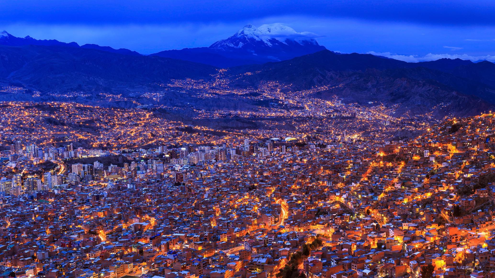
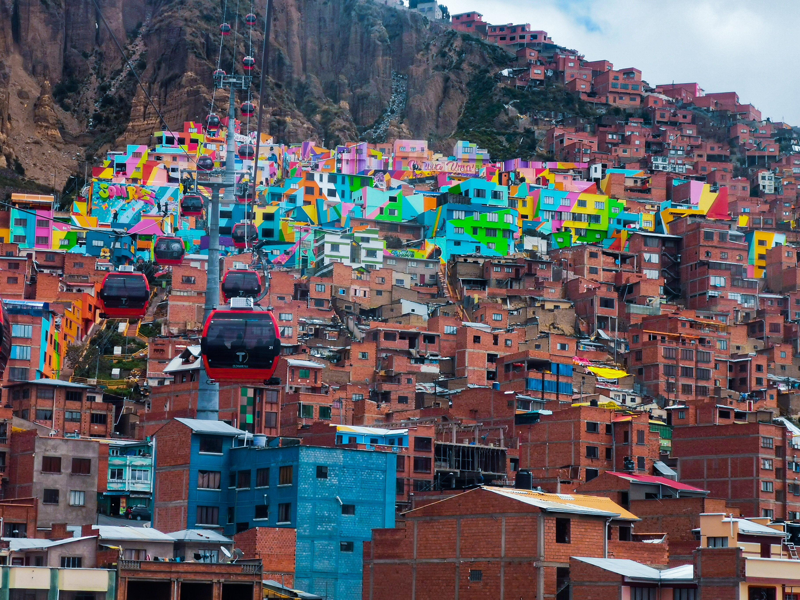

LA PAZ - BOLIVIA El departamento de La Paz es uno de los nueve departamentos en que se divide Bolivia. Su capital es Nuestra Señora de La Paz, sede de gobierno de Bolivia y de los poderes legislativo y electoral que se encuentra a una altitud de 3640 m s.n.m., y su ciudad más poblada, El Alto.
Está ubicado al oeste del país, limitando al norte con el departamento de Pando, al este con los departamentos del Beni y Cochabamba, al sur con el departamento de Oruro, al suroeste con las región chilena de Arica y Parinacota, al oeste con los departamentos peruanos de Tacna y Puno y el lago Titicaca y al noroeste con el departamento peruano de Madre de Dios. Con 133 985 km² es el tercer departamento más extenso, por detrás de Santa Cruz y Beni. Su población de 2 706 351 habitantes en 2012 lo convierte en el segundo departamento más poblado después de Santa Cruz y con 20,2 hab/km², el segundo más densamente poblado, por detrás del departamento de Cochabamba.
El departamento fue creado a partir de la Intendencia de La Paz de la Real Audiencia de Charcas, mediante Decreto Supremo de 23 de enero de 1826.
PLATOS TIPICOS.
Ají de lengua: lengua de vaca, papa, cebolla, acompañada de una de salsa picante.
Anticuchos: Brochetas de corazón de vaca, frito a la parrilla, acompañado de papa y salsa picante de maní
Fritanga: cerdo en pequeños trozos, ají, chuño y maíz.
Lagua de Chuño: Sopa preparada con chuño, carne de cordero, chalona remojada, papas, hojas de repollo, cebolla, condimentos con orégano.
Jakhonta: Preparado con trozos de carne, chuño, papa, hojas de repollo, cebolla; condimentado con orégano.
Ispi frito: Pescado pequeño frito. Se sirve con papa puti y mote
Sopa de Karachi: Pescado hecho hervir con papa y cebolla verde.
Ancas de rana: Este plato es caracteristico en las orillas del lago Titicaca, en el estrecho de Tiquina.


